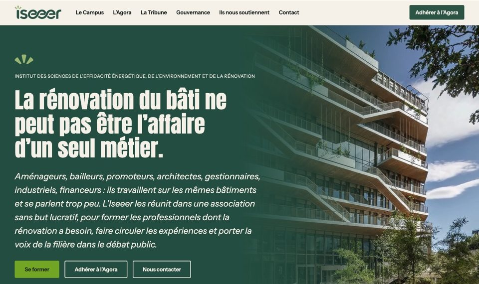
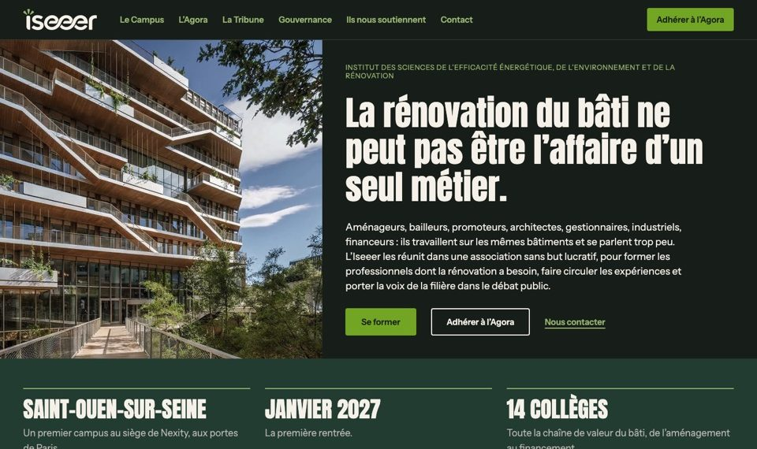
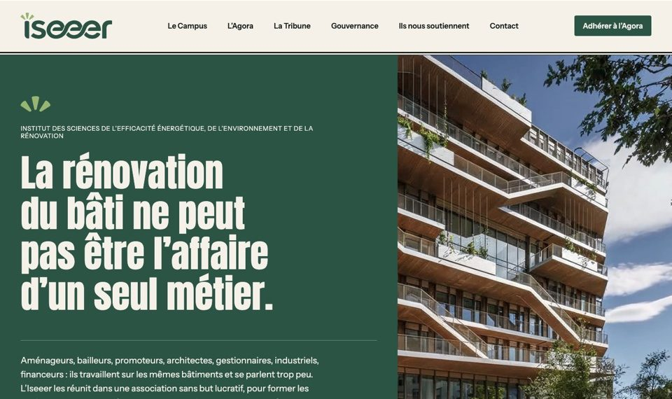

Le site, en trois pistes
Les mêmes textes et les mêmes sept pages, dans trois partis pris graphiques. Chaque piste se parcourt comme un vrai site : menu, liens, pages légales. La barre grise tout en haut permet de revenir ici, ou de passer à la même page dans la piste précédente ou suivante, pour comparer.

Piste A
Le communiqué
Une ouverture de marque sur fond vert, une image qui se fond dans le bandeau, des pages posées sur une feuille crème.
Ouvrir la piste A
Piste B
L’encre
Un site sur fond encre, la photo à côté du titre, des en-têtes de page compacts.
Ouvrir la piste B
Piste C
La revue en couleurs
Des fonds clairs, des parties numérotées alignées à gauche, l’adhésion toujours à portée dans le menu.
Ouvrir la piste C